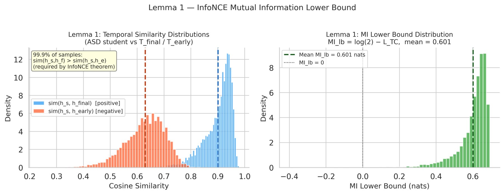
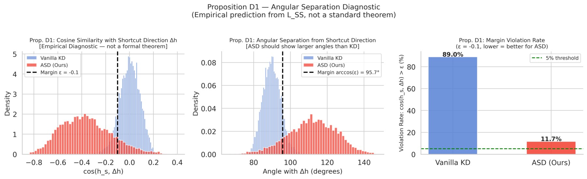
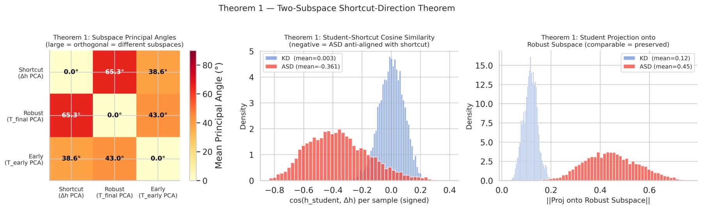
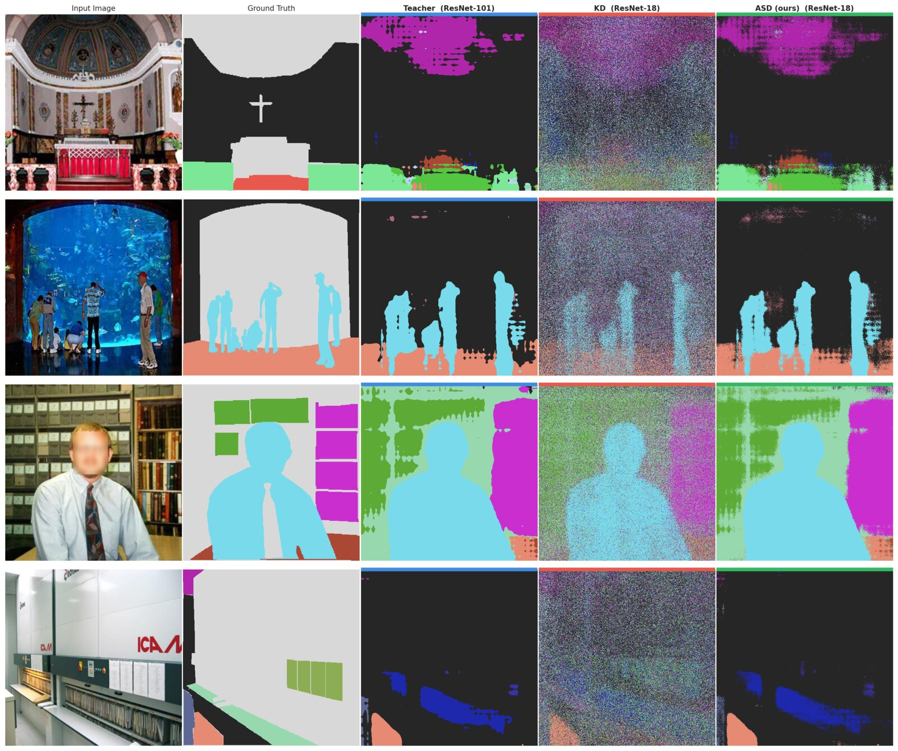
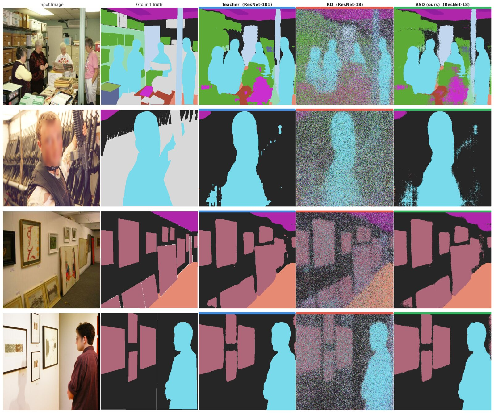
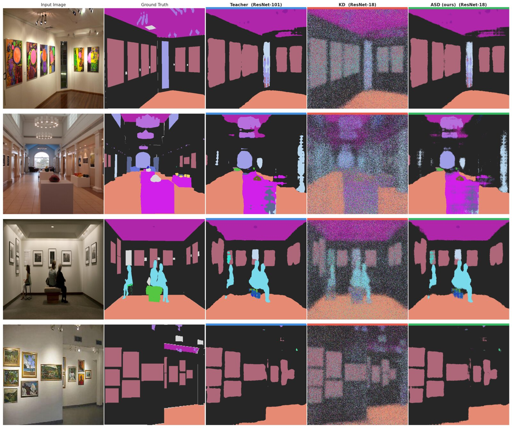
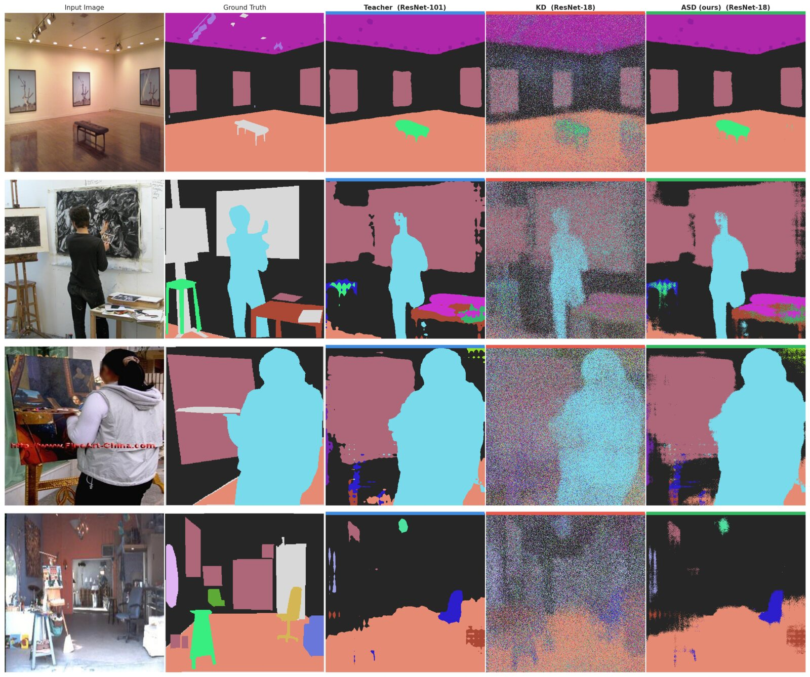
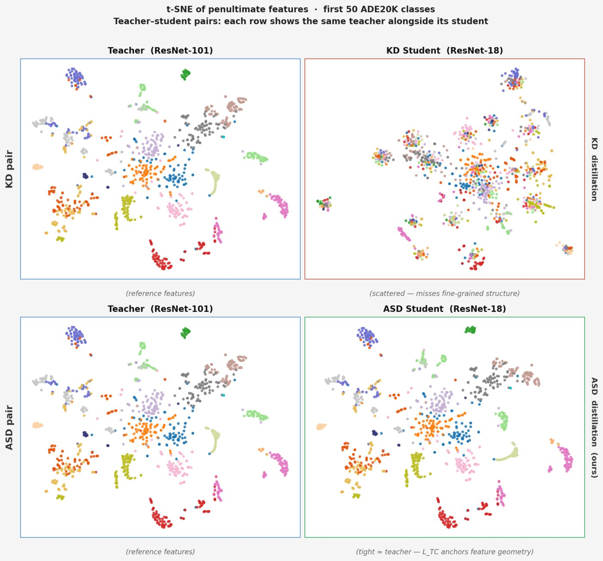

Abstract
Knowledge distillation (KD) trains a compact student by attracting it towards a converged teacher. It is silent about which directions the teacher itself learned to suppress: repulsive and bias-aware objectives exist, but none exploits the teacher's own trajectory to identify what the student should avoid. We observe that the missing signal is already encoded in the teacher's optimization trajectory: features that an early-stage teacher emphasizes but that a converged teacher attenuates are precisely the shortcut directions worth pushing the student away from. We instantiate this observation as Anti-Shortcut Distillation (ASD), a push–pull KD framework that treats the converged teacher \(T_{\mathrm{final}}\) as a positive semantic anchor and an early-checkpoint teacher \(T_{\mathrm{early}}\) as a temporal negative reference. ASD couples two losses: a temporal contrastive loss (\(\mathcal{L}_{\mathrm{TC}}\)) that places the early-teacher feature as a same-sample negative against in-batch and memory-bank final-teacher features in an InfoNCE objective; and a shortcut suppression loss (\(\mathcal{L}_{\mathrm{SS}}\)) that penalizes student projection onto the top eigenvectors of \(\mathbb{E}[\Delta h\,\Delta h^{\top}]\), the uncentered second-moment matrix of early-to-final feature displacements. Across 13 teacher–student pairs on CIFAR-100, ImageNet-100, and TinyImageNet, ASD attains the highest clean top-1 accuracy on more than 10 pairs and outperforms standard KD on 12. On CIFAR-100-C corruption robustness, ASD obtains the lowest mean Corruption Error (86.1 mCE) on the most challenging cross-architecture pair (WRN-40-2→ShuffleNet-V2). Mechanistic diagnostics confirm the intended geometry: the ASD student is systematically anti-aligned with the shortcut direction, while its projection onto the robust subspace is substantially larger (0.45 vs. 0.12).
Method
Networks pick up easy cues such as local texture, colour statistics and background early in training, and only later settle on shape-biased, semantically stable features. A converged teacher records where that process ended, but not the shortcut directions it passed through and then attenuated. ASD turns this trajectory into supervision. Two frozen snapshots of the same teacher are kept: the converged \(T_{\mathrm{final}}\) (what to imitate) and an early checkpoint \(T_{\mathrm{early}}\), taken at 15% of training (what to avoid). Only the student, plus a small projector when feature sizes differ, is trained. The projector is discarded at inference.
Temporal shortcut displacement
For each input, the change between teacher states is a label-free indicator of what convergence suppressed:
Per mini-batch, ASD forms the uncentered second moment \(\widehat{\mathbf{C}}_{\mathrm{sc}} = \tfrac{1}{|\mathcal{B}|}\sum_i \Delta h_i \Delta h_i^{\top}\) and keeps its top-\(K\) eigenvectors \(\mathbf{U}_K\) as the shortcut subspace. It is left uncentered because the mean displacement can itself be a dominant shortcut.
Temporal Contrastive loss \(\mathcal{L}_{\mathrm{TC}}\)
An InfoNCE objective in which the final-teacher feature is the positive and the same image's early-teacher feature is an explicit negative, alongside in-batch and memory-bank \(T_{\mathrm{final}}\) negatives:
Replacing the temporal negative with random negatives recovers a CRD-style objective, which is what the ablation isolates.
Shortcut Suppression loss \(\mathcal{L}_{\mathrm{SS}}\)
A batch-level geometric constraint: the normalized student feature is penalized when its projection onto the shortcut subspace exceeds a margin \(\varepsilon\):
When \(\mathcal{L}_{\mathrm{SS}}=0\), every student feature is at least \(\arccos(0.1)\approx 84.3^{\circ}\) away from the shortcut subspace.
Training objective
Both auxiliary terms are linearly warmed up, \(\beta(t)=\gamma(t)=\min(t/T_{\mathrm{warmup}},1)\), and combined with cross-entropy and standard logit distillation from \(T_{\mathrm{final}}\):
The two losses complement each other. \(\mathcal{L}_{\mathrm{TC}}\) gives a per-sample, relative push away from the early teacher, but it cannot stop the student from rediscovering shortcut directions from the data. \(\mathcal{L}_{\mathrm{SS}}\) constrains the whole subspace, but it carries no per-sample temporal signal.
Does the student follow the intended geometry?



Results
Image classification
Top-1 accuracy (%) over 13 teacher–student pairs, mean ± std over 3 seeds. All methods share the optimizer, schedule, augmentation and training budget. Underlined = best in column.
| Teacher Student |
WRN-40-2ShuffleNet-V2 | WRN-40-2ShuffleNet-V1 | ResNet-32×4ShuffleNet-V1 | ResNet-32×4ShuffleNet-V2 | VGG-13MobileNet-V2 |
|---|---|---|---|---|---|
| Teacher | 76.49 | 76.49 | 79.72 | 79.72 | 76.15 |
| Student (CE only) | 63.26±0.27 | 71.46±0.38 | 71.46±0.38 | 63.26±0.27 | 64.12±0.31 |
| KD | 66.72±0.32 | 73.79±0.26 | 73.09±0.38 | 66.17±0.18 | 65.86±0.28 |
| FitNets | 67.07±0.15 | 74.27±0.04 | 73.20±0.50 | 66.07±0.36 | 66.18±0.22 |
| AT | 67.66±0.19 | 73.97±0.21 | 73.25±0.28 | 66.28±0.24 | 66.38±0.19 |
| DKD | 66.84±0.31 | 73.63±0.39 | 72.33±0.33 | 66.42±0.28 | 66.02±0.24 |
| CRD | 67.81±0.42 | 74.34±0.47 | 73.60±0.16 | 66.98±0.36 | 66.64±0.31 |
| CkptKD | 67.27±0.03 | 72.66±0.20 | 73.39±0.01 | 66.52±0.08 | 66.08±0.14 |
| ASD (ours) | 68.05±0.14 | 74.94±0.09 | 73.98±0.27 | 67.18±0.19 | 67.02±0.18 |
ASD is best on all five heterogeneous pairs. The largest gain over KD is on WRN-40-2→ShuffleNet-V2 (+1.33 pp). When teacher and student have different representational bases, push–pull supervision matters most.
| Teacher Student |
ResNet-34ResNet-18 | WRN-40-2WRN-16-2 | ResNet-32×4ResNet-8×4 | WRN-40-2WRN-40-1 | VGG-13VGG-8 |
|---|---|---|---|---|---|
| Teacher | 79.91 | 76.49 | 79.72 | 76.49 | 76.15 |
| Student | 78.79 | 73.33 | 71.90 | 71.49 | 71.10 |
| KD | 80.22±0.19 | 74.74±0.17 | 73.32±0.11 | 73.38±0.47 | 73.68±0.35 |
| FitNets | 80.32±0.17 | 74.94±0.24 | 73.55±0.04 | 73.54±0.18 | 73.91±0.11 |
| AT | 80.30±0.12 | 74.99±0.15 | 73.78±0.15 | 73.79±0.16 | 71.61±0.12 |
| DKD | 80.04±0.36 | 75.08±0.14 | 73.69±0.32 | 73.63±0.07 | 73.99±0.05 |
| CRD | 80.71±0.34 | 74.76±0.12 | 73.15±0.12 | 73.63±0.33 | 74.04±0.18 |
| CkptKD | 73.94±0.13 | 71.31±0.06 | 72.17±0.15 | 70.65±0.15 | 70.48±0.12 |
| ASD (ours) | 80.50±0.07 | 75.87±0.29 | 73.13±0.12 | 74.16±0.21 | 74.26±0.13 |
ASD improves over KD on 4 of 5 same-family pairs. On ResNet-34→ResNet-18, CRD is 0.21 pp higher but with almost 5× the seed variance. ResNet-32×4→ResNet-8×4 is the capacity boundary: a student this heavily compressed still needs some low-level cues.
| Teacher → Student Dataset |
ResNet-50 → MobileNet-V2ImageNet-100 | ResNet-34 → ResNet-18TinyImageNet | ResNet-50 → ResNet-18ImageNet-100 |
|---|---|---|---|
| Teacher | 85.30 | 43.14 | 85.30 |
| Student (CE only) | 80.21±0.07 | 42.98±0.46 | 83.85±0.15 |
| KD | 82.43±0.41 | 44.36±1.23 | 84.72±0.35 |
| FitNets | 82.51±0.30 | 44.58±0.83 | 84.88±0.22 |
| AT | 82.90±0.30 | 44.42±0.91 | 84.92±0.26 |
| DKD | 82.54±0.18 | 45.44±1.11 | 84.85±0.18 |
| CRD | 83.01±0.18 | 45.02±1.08 | 85.24±0.19 |
| CkptKD | 82.70±0.30 | 44.75±1.02 | 84.80±0.28 |
| ASD (ours) | 83.24±0.13 | 46.00±1.45 | 85.48±0.15 |
The temporal shortcut signal still helps at higher resolution and with more classes: ASD is best on all three pairs. On TinyImageNet it beats CRD on 3 of 3 paired seeds (+0.62, +1.14, +1.18 pp).
Corruption robustness on CIFAR-100-C
Mean Corruption Error (mCE, %, lower is better) across all 15 corruption types at severity 5.
| Teacher Student |
ResNet-34ResNet-18 | WRN-40-2WRN-16-2 | ResNet-32×4ResNet-8×4 | WRN-40-2WRN-40-1 | VGG-13VGG-8 | WRN-40-2ShuffleNet-V2 |
|---|---|---|---|---|---|---|
| CE only | 87.0±0.3 | 95.9±0.2 | 99.6±0.4 | 93.7±0.4 | 87.0±0.3 | 88.5±0.4 |
| KD | 86.2±0.4 | 93.7±0.4 | 98.1±0.3 | 92.2±0.6 | 85.6±0.3 | 86.9±0.4 |
| FitNets | 86.0±0.4 | 93.6±0.1 | 98.0±0.3 | 92.1±0.3 | 85.5±0.2 | 86.8±0.3 |
| AT | 85.7±0.6 | 93.6±0.5 | 97.8±0.5 | 92.0±0.4 | 85.5±0.3 | 87.4±0.2 |
| DKD | 85.9±0.9 | 93.4±0.3 | 97.5±0.2 | 92.4±0.3 | 85.5±0.1 | 87.4±0.5 |
| CRD | 85.2±0.6 | 93.8±0.3 | 98.2±0.1 | 92.7±0.6 | 85.9±0.5 | 86.7±0.3 |
| CkptKD | 90.9±0.1 | 99.1±0.2 | 96.6±0.2 | 98.7±0.2 | 90.0±0.2 | 92.2±0.1 |
| ASD (ours) | 85.6±0.4 | 94.2±0.4 | 97.9±0.2 | 91.7±0.4 | 85.2±0.3 | 86.1±0.4 |
ASD has the lowest mCE on WRN-40-2→WRN-40-1, VGG-13→VGG-8 and the hardest cross-architecture pair, WRN-40-2→ShuffleNet-V2. CkptKD uses the same early checkpoint as an attractive teacher and loses robustness on five of six pairs. ASD uses it in the opposite direction.
Semantic segmentation on ADE20K
Both ASD losses act on penultimate features, so they extend to dense prediction unchanged. They are applied to the DeepLabv3 backbone feature map, with each spatial location treated as a sample. Setup: ResNet-101 teacher, 512×512 inputs, 40k iterations.
| Teacher → Student | From scratch | KD | Af-DCD | UFD-KD | ASD (ours) | ||||
|---|---|---|---|---|---|---|---|---|---|
| T. mIoU | S. mIoU | pixAcc | mIoU | pixAcc | mIoU | mIoU | pixAcc | mIoU | |
| ResNet-101 → ResNet-18 | 42.70 | 33.91 | 76.32 | 34.88 | 77.43 | 36.21 | 36.89 | 78.92 | 38.87 |
| ResNet-101 → MobileNetV2 | 42.70 | 34.32 | 76.74 | 34.92 | 77.28 | 35.97 | 36.24 | 78.65 | 37.91 |
ASD reaches 38.87 mIoU with a ResNet-18 student (+1.98 over UFD-KD, +3.99 over from scratch) and 37.91 mIoU with MobileNetV2 (+1.67 over UFD-KD).





Ablation: both losses matter
| Method (P1) | Clean Acc (%) ↑ | mCE (%) ↓ |
|---|---|---|
| KD | 80.22±0.19 | 86.2±0.4 |
| ASD w/o \(\mathcal{L}_{\mathrm{SS}}\) | 80.19±0.07 | 85.8±0.7 |
| ASD w/o \(\mathcal{L}_{\mathrm{TC}}\) | 80.15±0.19 | 85.9±0.4 |
| ASD (full) | 80.50±0.07 | 85.6±0.4 |
On P1 (ResNet-34→ResNet-18, CIFAR-100), either loss alone improves robustness over KD, but neither alone improves clean accuracy. Only the combination improves both.
Replacing the same-sample temporal negative with random in-batch negatives turns \(\mathcal{L}_{\mathrm{TC}}\) into a CRD-style loss. Using \(T_{\mathrm{early}}\) as the negative wins on 4 of 5 pairs, by up to +1.33 pp on WRN-40-2→ShuffleNet-V2.
BibTeX
@inproceedings{raza2026asd,
title = {Anti-Shortcut Distillation via Temporal Negative
Knowledge Transfer},
author = {Raza, Syed Muhammad and Tariq, Omer and Son, Jeongbae},
booktitle = {British Machine Vision Conference (BMVC)},
year = {2026}
}